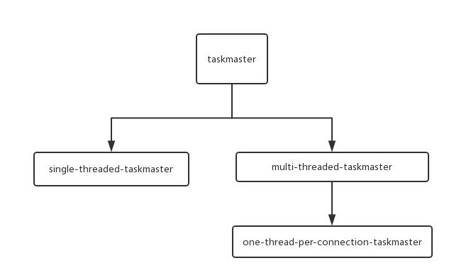
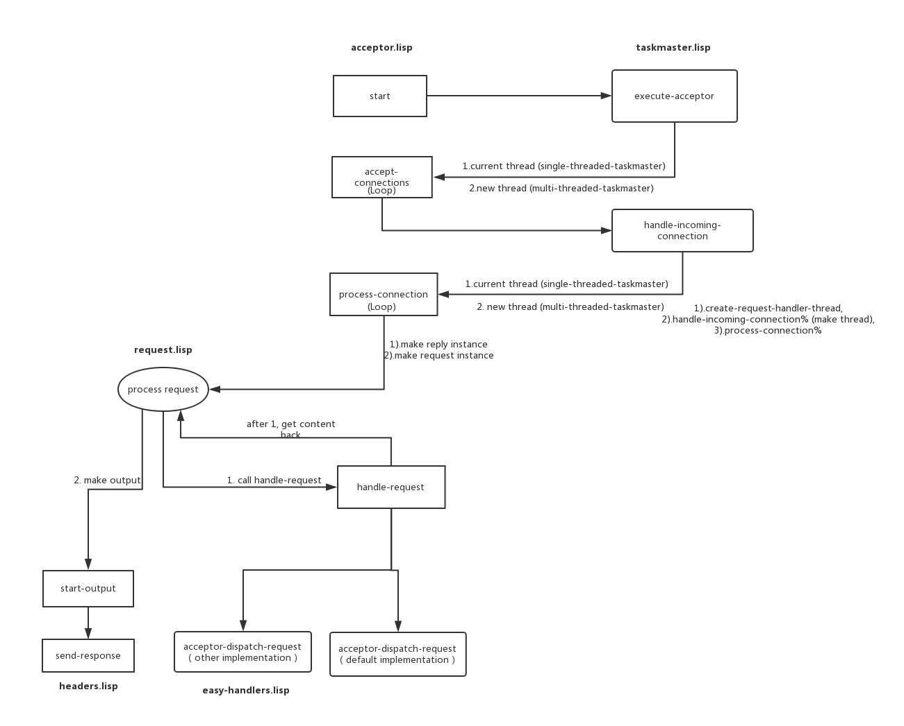

Hunchentoot源码分析之架构流程
Hunchentoot 是一个common lisp实现的web服务器，同时也提供了构建动态网站的一些工具集。能够处理 HTTP/1.1 chunking 、持久化连接(keep-alive)和 SSL 。
本文分析了hunchentoot基本架构，从启动一个服务实例到处理一个请求的这个过程进行介绍。
本文代码基于hunchentoot 1.2.35。
Table of Contents
1 涉及的主要源码文件
- acceptor.lisp => hunchentoot实例，当需要启动服务器时，实例化一个acceptor，然后调用start方法监听请求
- taskmaster.lisp => 当acceptor接收到请求后交给对应的taskmaster来处理，实现不同的taskmaster可以实现不同的处理逻辑（比如单线程还是多线程）
- request.lisp => request请求相关数据对象
- reply.lisp =>reply(response)相应相关数据对象
2 实例化acceptor
下面是启动服务器的一个示例:
(hunchentoot:start (make-instance 'hunchentoot:easy-acceptor :port 4242))
上面代码里的 easy-acceptor 的是继承自 acceptor 的子类。
当需要启动服务器时，实例化一个acceptor时会根据是否支持线程来实例化不同的 taskmaster ，同时也绑定了相应的request和reply类。
如下面代码所示:
(defclass acceptor () (...) (:default-initargs :address nil :port 80 :name (gensym) :request-class 'request ;; <-- :reply-class 'reply ;; <-- #-lispworks :listen-backlog #-lispworks 50 :taskmaster (make-instance (cond (*supports-threads-p* 'one-thread-per-connection-taskmaster) ;; <-- (t 'single-threaded-taskmaster))) :output-chunking-p t :input-chunking-p t :persistent-connections-p t :read-timeout *default-connection-timeout* :write-timeout *default-connection-timeout* :access-log-destination *error-output* :message-log-destination *error-output* :document-root (load-time-value (default-document-directory)) :error-template-directory (load-time-value (default-document-directory "errors"))) (:documentation "...")
taskmaster.lisp 里定义了两大类 taskmaster ，关系如下图:

3 启动服务
实例化完 acceptor 后调用其 start 方法开始监听。在监听成功后，在taskmaster里绑定对应的执行acceptor的指针，做到两者可以互相引用。如下所示:
(defmethod start ((acceptor acceptor)) (setf (acceptor-shutdown-p acceptor) nil) (start-listening acceptor) (let ((taskmaster (acceptor-taskmaster acceptor))) (setf (taskmaster-acceptor taskmaster) acceptor) ;; <-- (execute-acceptor taskmaster)) acceptor)
当有请求时，主要处理流程和相应代码位置如下图:

当调用 acceptor 的 start 方法后，会调用对应 taskmaster 的 execute-acceptor 方法，根据对应 taskmaster 的不同（多线程还是单线程），以不同的方式（是否新建线程）调用 acceptor 的 acceptor-connections 。接下来的处理流程就像图上所示，还是比较清楚的。
可以看到 acceptor 配合 taskmaster 使用，将不变的逻辑放到 acceptor 里，根据实现会变化的逻辑放到了 taskmaster 里，还是比较巧妙的。